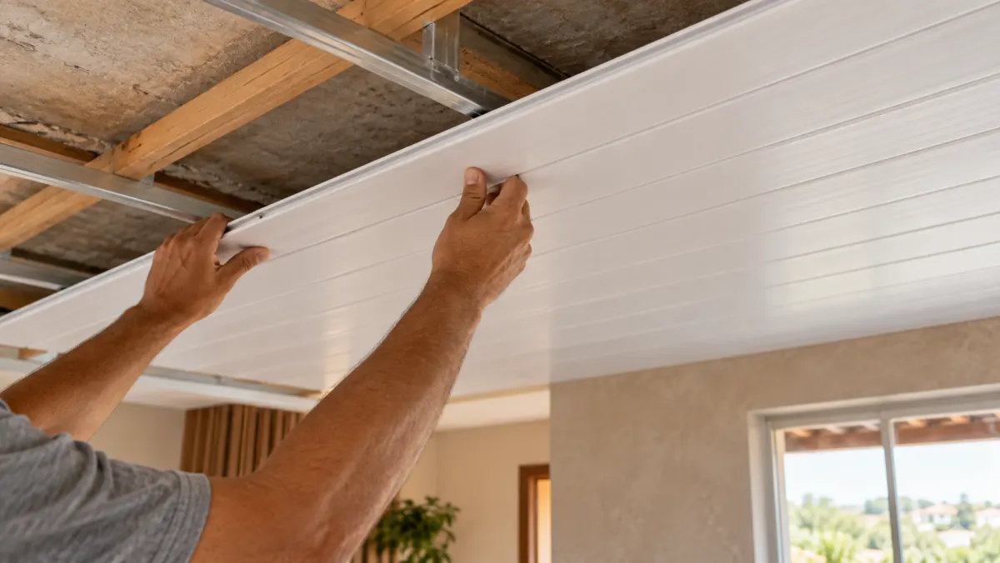

PVC Ceiling Installation in Brazil: What Buyers Should Check Before Ordering
“What is the correct spacing for a PVC ceiling?” is a useful buying question, but there is no universal number that suits every profile and support system. For a Brazilian forro de PVC order, the answer starts with the selected manufacturer’s installation manual, the project drawings and the climate above the ceiling—not a generic picture of a finished room.

Ask for the exact profile code, support layout, maximum span, fixing method, perimeter movement allowance, trim set and temperature limitations in one written package. Have the local designer or installer check that package against the actual ceiling and applicable Brazilian requirements.
Why a ceiling panel quotation needs an installation drawing
A quote that says only “PVC ceiling, 200 mm wide” leaves too many questions unanswered. Is 200 mm the nominal or effective cover width? What is the panel length and weight? Is the supporting frame metal, timber or another approved system? Where are lights, service access panels and ceiling transitions? These choices affect both the number of panels and the accessories needed for a usable order.
Ask the supplier for a panel cross-section and a typical fixing detail. Then send the installer the actual span, room dimensions, openings and roof or slab condition. A distributor can sell a well-defined kit more confidently than a bundle of loose boards.
Support spacing: use the product instructions, not a copied number
The Belo Horizonte municipal construction specification discusses PVC ceiling systems and says support dimensions and spacing should follow the profile manufacturer’s installation manual. It cites recommended primary and secondary support limits in its own public-works context; that is not a blanket approval for every imported product.
Before offering a local installation answer, obtain the exact manufacturer detail for the proposed SKU. Confirm whether the drawing measures spacing between supports or between fixings, whether the panel runs perpendicular to the support, and how the installer will treat edges and penetrations. Do not copy a competitor’s spacing diagram into a different product.
Expansion allowance and heat above the ceiling
The same municipal document addresses allowance at edges for material movement and warns about heat exposure above PVC ceilings. The right gap for a purchased system must still come from its own installation instructions; a decorative wall-panel rule cannot simply be reused for a ceiling. Ask how the perimeter trim conceals movement without pinching the board, and whether the roof cavity, hot pipes or luminaires create a temperature condition the selected product cannot tolerate.
For a renovation, photograph the existing ceiling void and note the room’s ventilation and roof construction. If the site has persistent water intrusion or excessive heat, correct that condition before treating a PVC finish as the solution.
Build a complete import and showroom kit
Approve a connected sample of several panels, not just one short piece. Include starting and finishing trims, corners, visible joint details, a carton label and a copy of the installation instructions. Check that the approved finish and profile match the bulk-order code. A long ceiling panel can also change carton length, loading plan and damage exposure; review export packing before finalizing quantities.
The Luvie 3D PVC catalog (PDF) is a visual shortlist only. Confirm whether any chosen item is actually rated and supplied for ceiling use; never infer suitability from a decorative image.
Questions to put in the purchase order
- Which exact SKU and cross-section are being purchased?
- What are nominal width, effective cover width, length and accepted tolerances?
- Which manufacturer drawing controls support spacing, orientation and fixing?
- What perimeter allowance, heat limits and service-access details apply?
- Which trims and fasteners are included, and which are sourced locally?
- How are long panels protected, labeled and loaded for shipment?
Common buyer questions
Can wall panels be used as PVC ceiling panels?
Not automatically. Ask whether the exact wall-panel SKU is approved for the proposed ceiling installation and whether its fixing detail, span and fire documentation suit that use. Start with our ceiling-versus-wall guide.
Is one spacing value valid for every forro de PVC?
No. Support spacing depends on the manufacturer’s profile and installation system as well as site design. Require the current manual for the exact SKU.
Does the catalog replace an installation manual?
No. A catalog helps select finishes; an installation manual and project-specific review control the build.
Send the ceiling dimensions and intended use.
Luvie can help shortlist panel and trim options, then provide product-level details for your local installation review.
Discuss on WhatsApp